线程池
线程池的核心思想就是实现线程的复用，避免线程反复创建和销毁带来的性能开销。这里主要介绍了基本的 ThreadPoolExecutor 以及用于定时循环任务的 ScheduledThreadPoolExecutor ，而且线程池是面试的重点。
ThreadPoolExecutor
线程池的核心思想就是实现线程的复用，避免线程反复创建和销毁带来的性能开销。
Java 通过 ThreadPoolExecutor 来创建线程池，其核心参数如下：
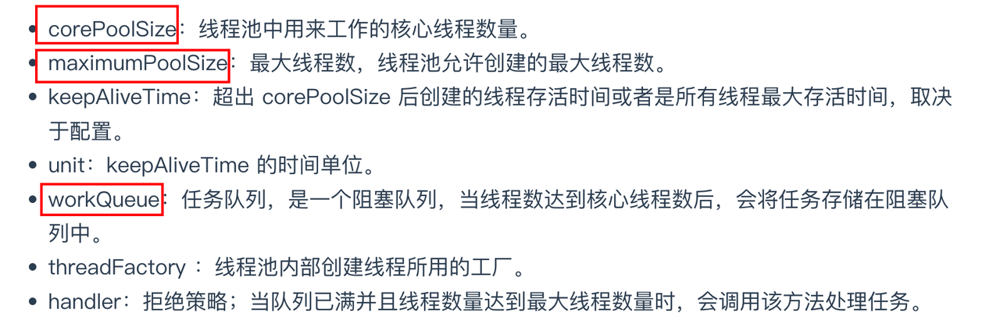
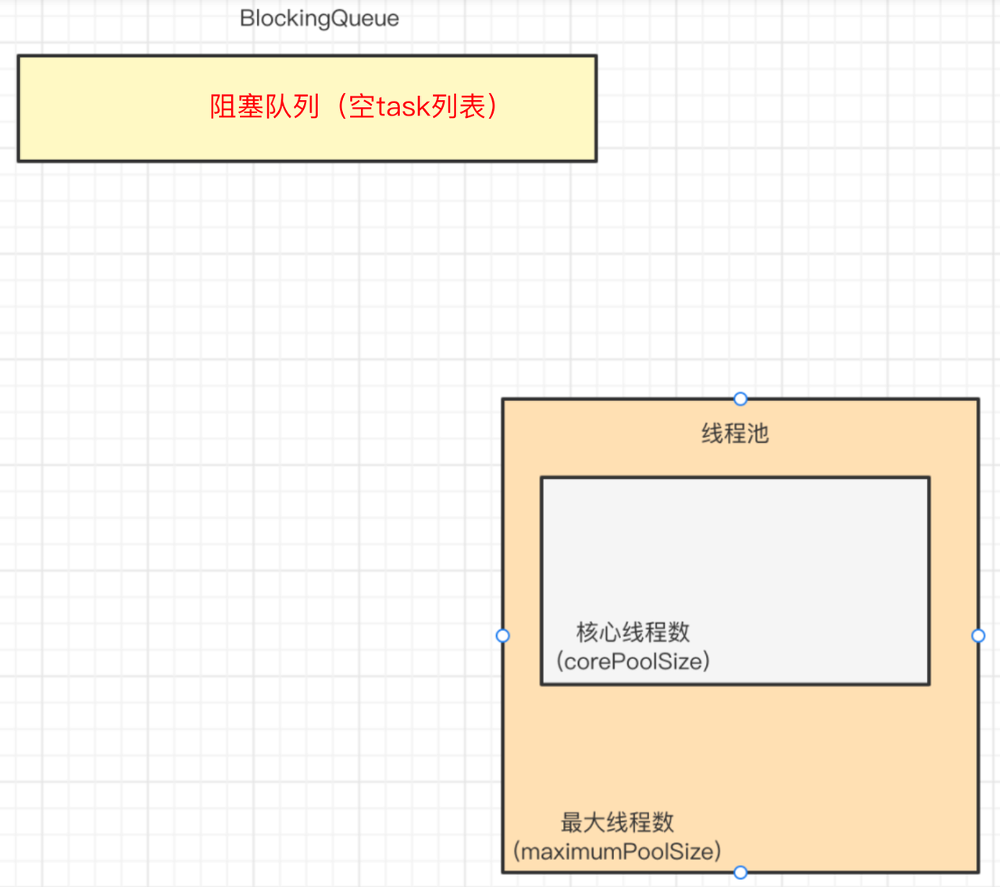
线程池 execute 工作
1 | public void execute(Runnable command){} |
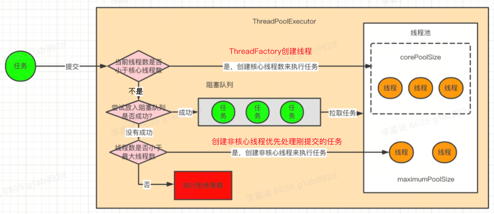
线程在线程池内部被封装成内部类 Worker 创建的对象。
在线程池的 execute 方法中是通过 addWorker 方法来创建线程并执行任务的，Worker 会将线程和任务一同封装到 Worker 对象中，在通过 runWorker 方法来执行任务。
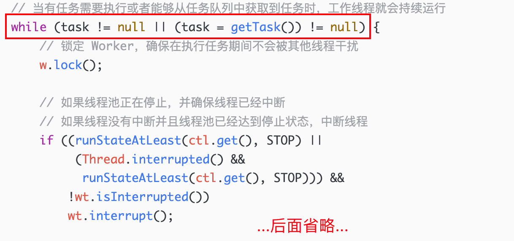
在 runWorker 方法内部，通过 while 循环保证执行完任务的线程不被销毁，而是复用不断地 getTask 获取任务，只要能获取到任务就会调用 run 方法继续执行。
每次在执行任务时，都会对 Worker 进行加锁，执行完任务再解锁，这样就可以通过 Worker 的加锁状态判断当前线程是否在执行任务（调用 Worker 的 tryLock）。
通过 getTask 获取任务时，可以设置获取任务的线程的超时退出机制：
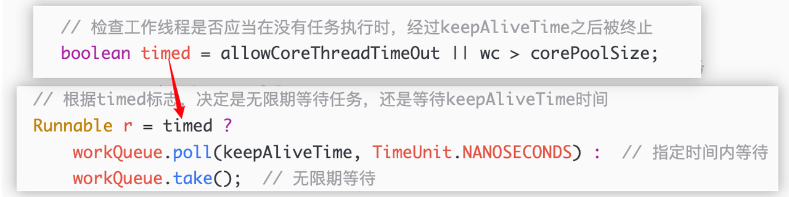
当线程池线程数已经超过了核心线程数 or 允许超时退出，会调用阻塞队列的 poll 方法传入 keepAliveTime 参数，等待 keepAliveTime 时间后如果仍然没有获取任务则返回 null，当 getTask 返回 null 时线程就会退出了。反之则调用阻塞队列的 take 方法无限期的等待任务的到来。
通过 getTask 方法的超时等待退出机制的流程总结如下：
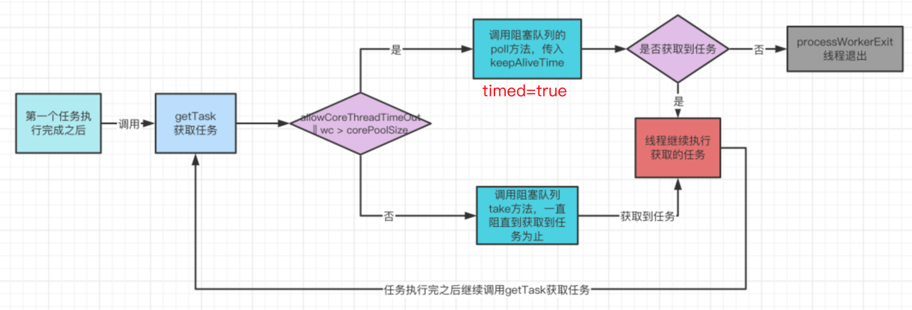
线程池的5种状态
在线程池运行过程中，大多数操作都需要判断当前线程池处于什么状态，再决定是否继续执行操作。
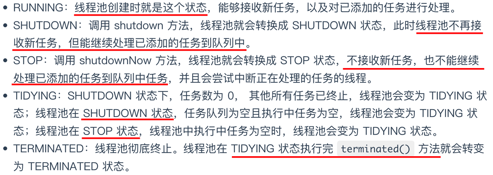
将上述五个状态的状态转换总结为下面的流程图：
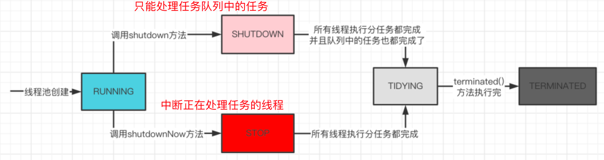
线程池的关闭
就是上面说到的 shutdown 方法 和shutdownNow 方法。
其中 shutdown 方法中断所有闲置（已经不从任务队列中获取任务）的工作线程——通过 Worker 调用 tryLock 方法判断线程是否工作。
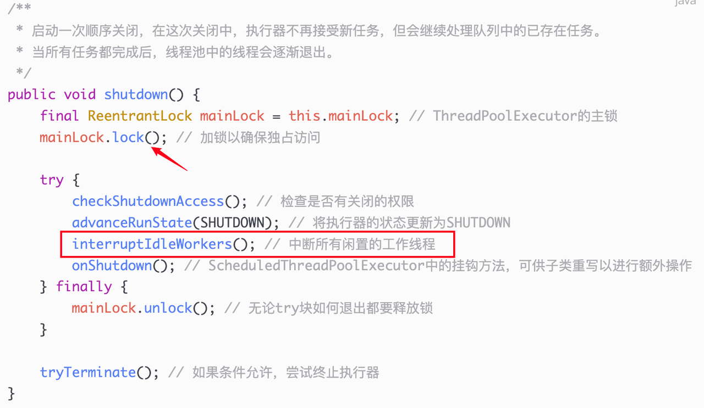
在更改线程池状态的过程中通过加锁来保证状态更新的原子性，防止在多线程环境中有其他线程对线程池进行更改或提交新任务等。
而 shutdownNow 方法中，则会将任务队列中的 task 都移除，直接进入 STOP 状态。
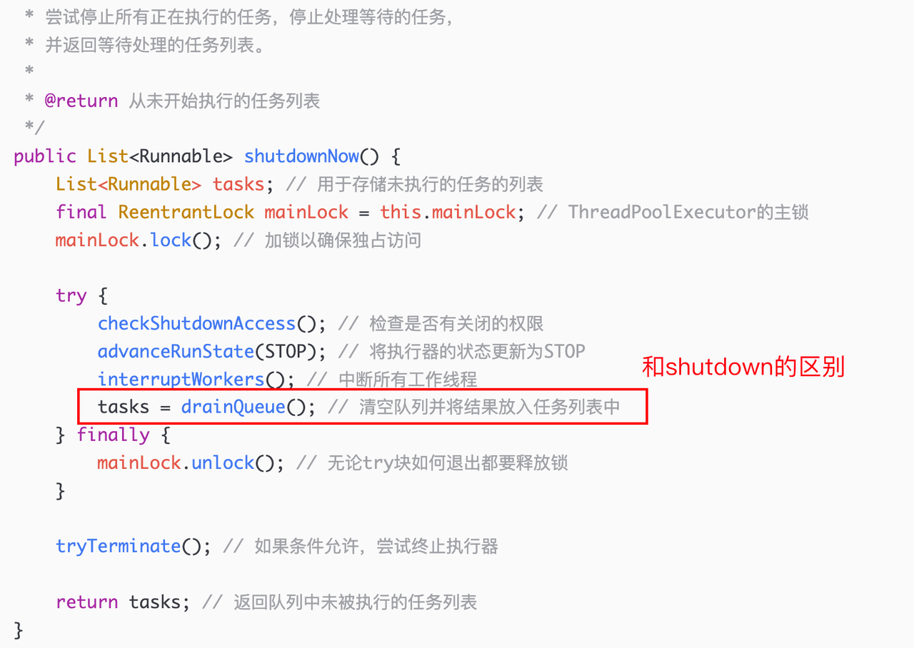
线程池的使用场景
使用了 JDK 内部提供的 Executors 工具类来快速创建线程池。
模拟 Web 服务器
1
2
3
4
5
6
7
8
9
10
11
12
13
14
15
16
17
18public class WebServer {
private static final int NTHREADS = 100;
private static final ExecutorService executor = Executors.newFixedThreadPool(NTHREADS);
public static void main(String[] args) {
while (true) {
// 接受请求 -- 每一个请求都是一个新线程
Runnable request = new Runnable() {
public void run() {
// 处理请求
System.out.println("处理请求: " + Thread.currentThread().getName());
}
};
executor.execute(request);
}
}
}并行计算
1
2
3
4
5
6
7
8
9
10
11
12
13
14
15
16
17
18
19
20
21
22
23
24
25
26
27
28public class ParallelCalculation {
private static final int NTHREADS = 4;
private static final ExecutorService executor = Executors.newFixedThreadPool(NTHREADS);
public static void main(String[] args) {
Callable<Double> task = new Callable<>() {
public Double call() throws Exception {
// 模拟数值计算
return Math.random() * 100;
}
};
List<Future<Double>> results = new ArrayList<>();
for (int i = 0; i < 10; i++) {
results.add(executor.submit(task));
}
for (Future<Double> result : results) {
try {
System.out.println(result.get());
} catch (Exception e) {
throw new RuntimeException(e);
}
}
executor.shutdown();
}
}模拟处理异步任务
1
2
3
4
5
6
7
8
9
10
11
12
13
14
15
16
17
18
19
20
21public class SyncTask {
// private static final int NTHREADS = 1;
private static final ExecutorService executor = Executors.newCachedThreadPool();
public static void main(String[] args) {
System.out.println("Main thread executes task...");
executor.execute(() -> {
System.out.println("Sub thread executes async task...");
try {
Thread.sleep(1000);
} catch (InterruptedException e) {
throw new RuntimeException(e);
}
System.out.println("Sub thread finishes async task...");
});
executor.shutdown();
System.out.println("Main thread continues executing task...");
}
}
通过 Executors 工具类来创建线程池有多种方案，但是不推荐：
固定线程数量的线程池
1
ExecutorService newFixedThreadPool(int nThreads)
newFixedThreadPool 线程池由于使用了 LinkedBlockingQueue，队列的容量默认无限大，实际使用中出现任务过多时会导致内存溢出。
单个线程数量的线程池
1
ExecutorService newSingleThreadExecutor()
接近无限大线程数量的线程池
1
ExecutorService newCachedThreadPool()
newCachedThreadPool 线程池由于核心线程数无限大，当任务过多的时候会导致创建大量的线程，可能机器负载过高导致服务宕机。
带定时调度功能的线程池
1
ScheduledExecutorService newScheduledThreadPool(int corePoolSize)
实际项目中合理使用线程池
线程数
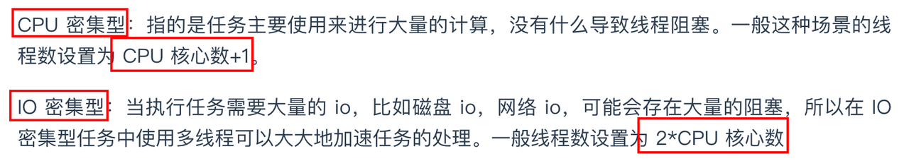
Java 中用来获取 CPU 核心数的方法是：
线程工厂
建议自定义，可以设置线程的名称，方便日志查询。
有界队列
在构造时可以传入参数来限制任务队列的大小，防止任务数量过多而导致内存溢出。
利用自定义线程池来改造升级前面 web 服务器、并行计算、异步任务处理的例子。
模拟 web 服务器
Web服务器通常需要处理 I/O 操作，比如网络I/O，因此它们被视为 I/O 密集型任务。因此，我们将线程数设置为 2 * CPU 核心数。
1
2
3
4
5
6
7
8
9
10
11
12
13
14
15public class WebServer {
private static final int CPU_COUNT = Runtime.getRuntime().availableProcessors();
private static final int CORE_POOL_SIZE = 2 * CPU_COUNT;
// 只有在任务队列满了之后才会创建非核心线程
private static final int MAX_POOL_SIZE = 2 * CPU_COUNT + 1;
private static final ThreadPoolExecutor executor = new ThreadPoolExecutor(
CORE_POOL_SIZE,
MAX_POOL_SIZE,
60L,
TimeUnit.SECONDS,
new LinkedBlockingQueue<>(1000)
);
public static void main(String[] args) { /* ... */}
}并行计算
并行计算任务主要用于计算，没有 I/O 阻塞，所以它们是** CPU 密集型**的。线程数设置为CPU核心数 + 1。
异步任务处理
异步任务通常涉及到 I/O 操作，比如数据库查询或文件读写，因此它们被视为** I/O 密集型任务**。因此，我们将线程数设置为2 * CPU核心数。
ScheduledThreadPoolExecutor
定时任务类。指定延迟时间后执行任务 or 周期性执行任务。
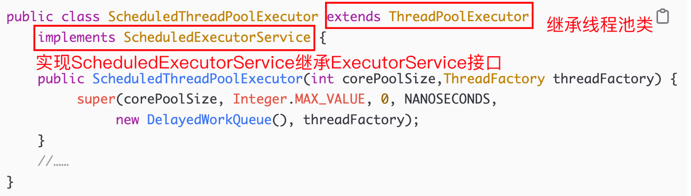
相对于 ExecutorService 接口，ScheduledExecutorService 接口增加了几个与定时相关的方法。
主要方法
schedule 方法
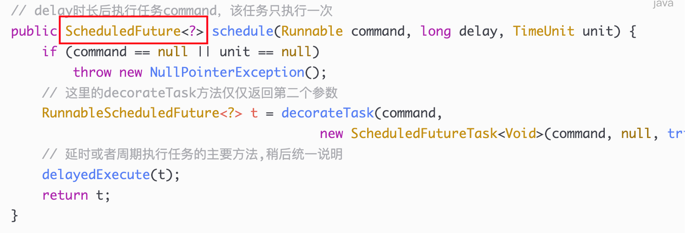
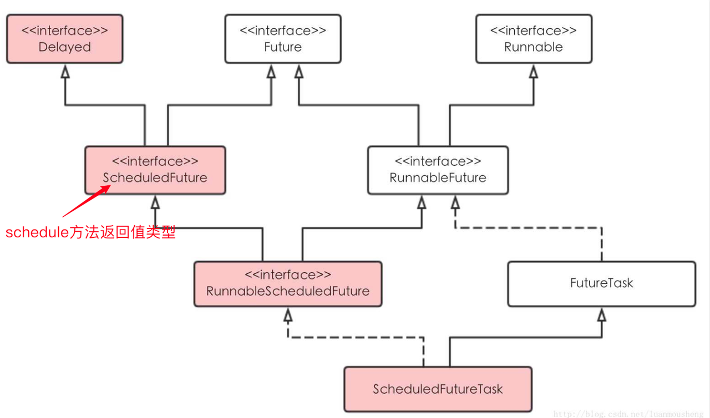
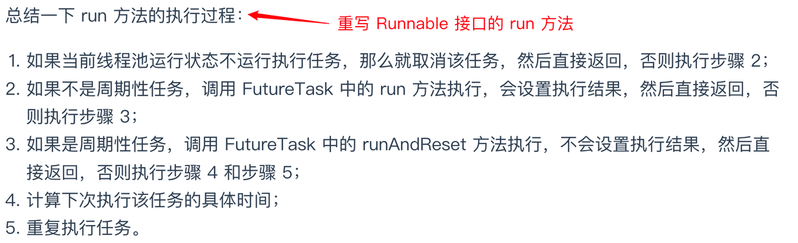
scheduleAtFixedRate 方法（新增定时周期）
以后每隔 period 时长再次执行任务。注意，period 是从任务开始执行算起的。
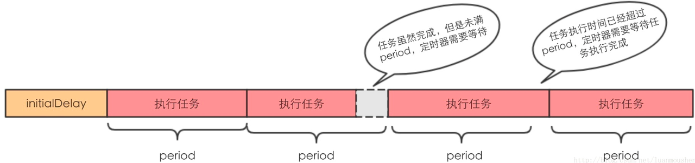
scheduleWithFixedDelay 方法（新增定时周期）
以后每当任务执行完成后，等待 delay 时长，再次执行任务。
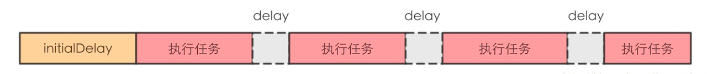
delayedExecute 方法
定时任务执行的主要方法，前面两个定时方法都用到了它。通过检查线程池中的状态，将任务加入到等待队列当中，底层调用 addWorker 方法启动并执行任务。
DelayedWorkQueue
在 ScheduledThreadPoolExecutor 中来保存等待的任务。
DelayedWorkQueue 是一个无界优先队列，使用数组存储，底层使用堆结构来实现优先队列的功能。
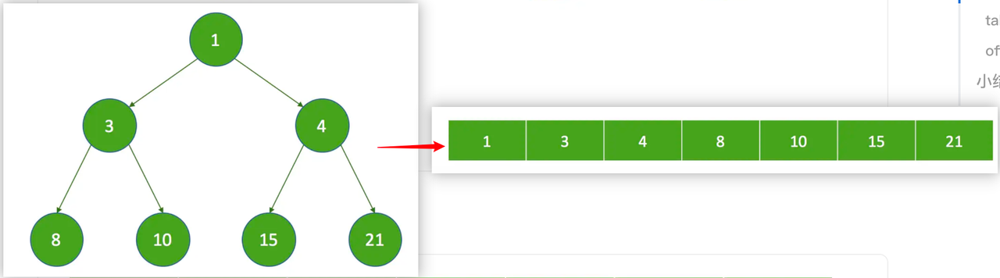
假设，索引值从 0 开始，子节点的索引值为 k，父节点的索引值为 p，则：
在延迟等待队列中的线程逻辑身份：
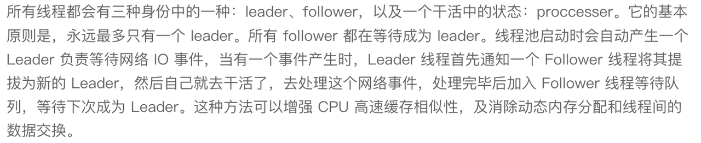
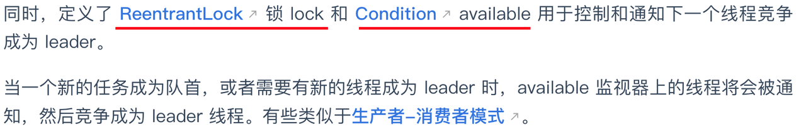
condition的 available 的作用：等待和唤醒机制，每个 leader 在执行任务之前会唤醒一个 follower 线程使其称为新的 leader 等待下一个定时任务的到来。
DelayedWorkQueue 是一个优先级队列（插入删除的时间复杂度是 O(logN) ），它可以保证每次出队的任务都是当前队列中执行时间最靠前）。
take 方法
这里的 take 方法和前面线程池介绍的 getTask 方法的区别是：getTask 方法循环从队列中取任务，取出来就执行了；但是这里的定时队列可能取出来的任务还没有到预期的执行时间，所以在 take 中要保证到指定的执行时间才能被取走。
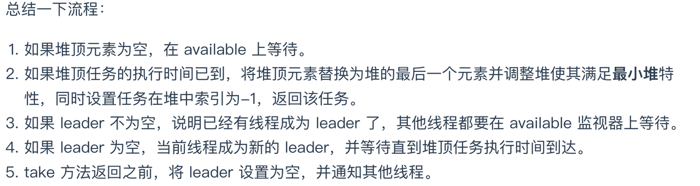
在定时等待队列中选取 leader，作用是为了减少不必要的等待时间。leader 只等待下一个任务到来的时间间隔，其他 followers 无限期等待（我的理解是：每次只唤醒一个线程成为新 leader，而不是通过定时等待 delay 后所有线程都唤醒，造成系统资源的浪费和频繁地上下文切换）。
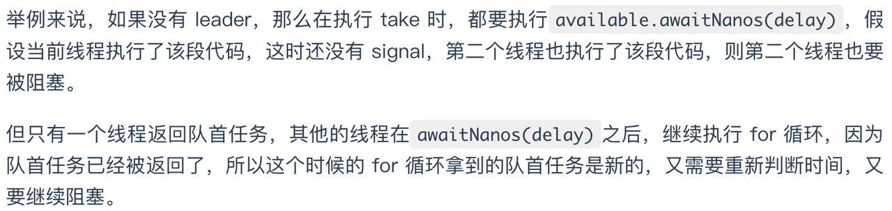
offer 方法
实现向延迟队列插入一个任务的操作，并保证整个队列仍然满足最小堆的性质（通过比较新插入节点和 parent 节点的延迟时间）。